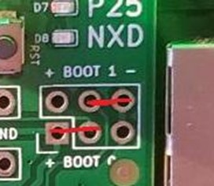

Flashing a hotspot¶
Building the firmware¶
- Change directories to the firmware folder with
- Build the firmware binary
Info
Depending on the performance of your Raspberry Pi or PC, this step can take a while.
- Change directories to the firmware folder with
- Build the firmware binary
- Generic STM32 Board
- Repeater Builder Board
- WA0EDA V3 cards
Info
Depending on the performance of your Raspberry Pi or PC, this step can take a while.
Flashing the board¶
You can flash the hotspot with a USB adapter board (recommended) or directly on the GPIO pins of a Raspberry Pi.
Flash with the following command while hat is on the USB Adapter Board. Set the adapter switch to position B or ‘ON’, and plug the adapter board into the Pi. Run the command:
- Using jumper wires, connect the sockets of BOOT 1 and BOOT 2 as shown on the image. 
Danger
Make sure the wires are not touching each other!
- With the jumpers connected, press the reset button on the board to put it into programming mode.
- Flash the board:
- Once the board is completely flashed, remove the jumpers added in step 1. This can be confirmed with a 100% progress and a success message in the command line window.
- The board should be ready to go. If unsuccessful, rinse and repeat the steps in this section.
Flash the board with the following commands:
Repeater Builder Board
This is unconfirmed at this time.
WA0EDA V3 Cards